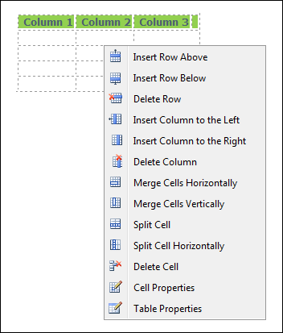

Editing a Table
How to edit a table using the right click menu or the Table Wizard of the TelerikEditorProvider for the RTE.
- Place your cursor inside the table. Note: If you want to use the drop down list to modify the table design (rather than the Table Wizard) then place your cursor in the cell where you want to perform the modification.
- Right-click using your mouse. This displays the drop down list.
- Select an option to modify the rows, columns or cells of the table - OR - Select either the Table Properties or Cell Properties to use the Table Wizard to modify the table.
-
Click the OK button confirm.

Editing a Table